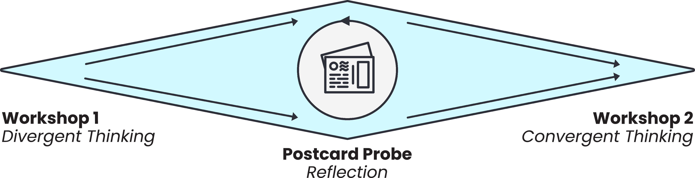
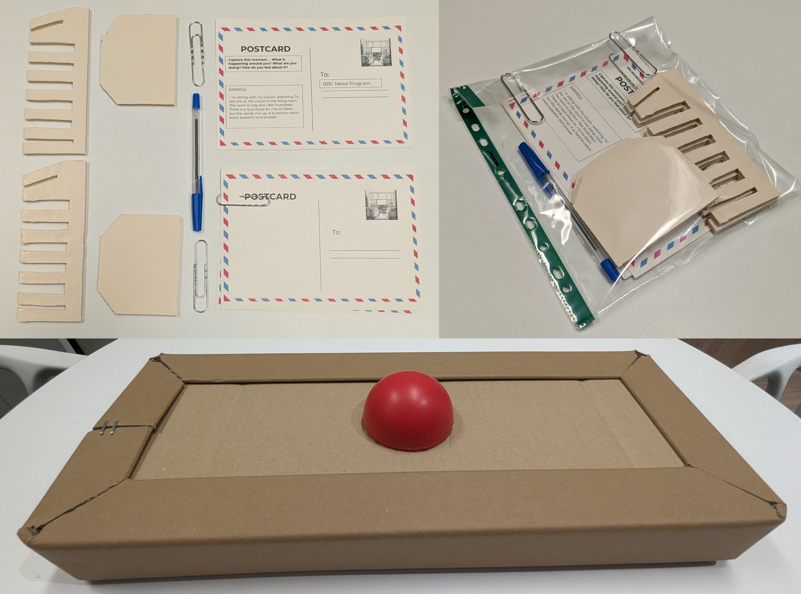
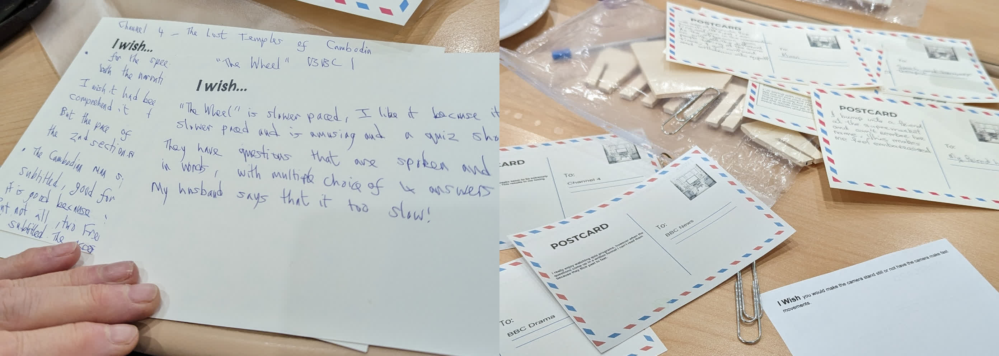

“I Wish You Could Make the Camera Stand Still”: Envisioning Media Accessibility Interventions with People with Aphasia
Authors
- Alexandre Nevsky, King’s College London, London, UK. alexandre.nevsky@kcl.ac.uk
- Filip Bircanin, King’s College London, London, UK. filip.bircanin@kcl.ac.uk
- Madeline Cruice, City, University of London, London, UK. m.cruice@city.ac.uk
- Stephanie Wilson, City, University of London, London, UK. s.m.wilson@city.ac.uk
- Elena Simperl, King’s College London, London, UK. elena.simperl@kcl.ac.uk
- Timothy Neate, King’s College London, London, UK. timothy.neate@kcl.ac.uk
The 26th International ACM SIGACCESS Conference on Computers and Accessibility (ASSETS ’24), October 27–30, 2024, St. John’s, NL, Canada
Abstract
Audiovisual media is integral to modern living, yet is not always accessible to all. Modern accessibility interventions, such as subtitles, support many, however, communities with complex communication needs are largely unconsidered. In this work, we envision future accessibility interventions from the ground up with one such community – people with aphasia. Over two workshops and a probe activity, we problematise the space of audiovisual consumption by people with aphasia, and co-envision directions for development in accessible audiovisual media. From low-fi diegetic prototypes to mid-fidelity solutions, we explore new visions of accessibility interventions for complex communication needs – notably enabling high levels of content manipulation and personalisation. Our findings raise open questions and set directions for the research community in developing accessibility interventions for audiovisual media to support users with diverse needs in accessing audiovisual content.
CCS Concepts
Human-centered computing: Accessibility technologies
Human-centered computing: Empirical studies in accessibility
Human-centered computing: Accessibility theory, concepts and paradigms
Keywords
- Accessibility
- audiovisual
- media
- aphasia
- complex communication needs
- envisioning
- probes
- prototype
Introduction
Access to audiovisual media is crucial in our modern lives – the significant technological advancements of recent decades have led to most people in the developed world being able to interact with media-rich content at any time through various devices and viewing patterns. This access to media, however, is not guaranteed for all people, with many of those experiencing disabilities being excluded from sharing in this collective experience. The fundamental nature of audiovisual media is complex as it includes both visual and auditory information, as well as combining these two streams of information over a temporal dimension, which introduces additional barriers around cognitive effort [93] and language [11]. Moreover, the development of novel ways to experience audiovisual media, such as virtual or mixed reality [29, 90], risks further exclusion of people living with disabilities.
Due to the significance of audiovisual media, alongside their inherent inaccessibility, researchers have developed technical accessibility interventions aimed at facilitating viewing experiences. This include subtitles, which present auditory information in the form of text and support viewers who are d/Deaf or hard of hearing (DHH) [16, 52, 80, 86], which have been investigated over a wide range of devices, viewing patterns, and with enhanced capabilities. Accessibility interventions that translate one form of audiovisual information into another are widespread and can benefit diverse communities [44, 48, 51]; however, they are often inaccessible to people with complex communication needs (CCNs), such as aphasia, due to relying on language-based presentations.
Aphasia is a language impairment that can impact various aspects of communication including reading, writing, speaking and listening, and often occurs after a stroke or other damage to the brain [68]. The barriers introduced by the inherent complexity of audiovisual media are exacerbated by aphasia [74], along with other cognitive and motor impairments experienced by stroke survivors [6]. Currently, much of the existing research on the development of accessibility interventions focuses on a narrow set of communities and types of interventions, while falling short in considering the needs of other communities, including those living with aphasia [75]. To this end, we contribute the first study that envisions accessibility interventions for audiovisual media with people living with aphasia, running two exploratory workshops and employing postcards as cultural probes. We address the following key research questions: (1) what form should accessibility interventions take, and (2) what is the likely impact of these interventions on the viewing experience. Additionally, we explore the social aspect of audiovisual media viewing and how envisioned accessibility interventions might play into it. Our main contributions in this paper are:
- The first exploration and creation of prototypical accessibility interventions for audiovisual media specifically envisioned for people living with aphasia
- Presentation of underlying tensions between accessible interventions and the viewing context
- Insights and recommendations for future envisioning and intervention design with people living with aphasia
Related Work
Accessibility Interventions for Audiovisual Media
Audiovisual media are integral to participation in many aspects of modern life – engaging socially [27, 109], civically [63, 112], culturally [76]. Access to these media is vital for informed knowledge and to engage with the world beyond our surroundings [85]. This access, however, is not guaranteed to all people, as many people living with disabilities experience barriers when consuming audiovisual media. Having an audio and visual component means that being unable to access either one of these streams of information leaves the viewer with limited access to the content, as experienced by the DHH [1] or blind and visually impaired (BVI) [58, 95] communities. Furthermore, audiovisual media have the inherent complexity of combining both audio and visual information over a temporal dimension [40, 48], which can introduce challenges due to further cognitive [93] or language [11] barriers.
To address this inaccessibility of audiovisual media, researchers have developed ways to support the viewing experience through accessibility interventions – pieces of technology that help bridge accessibility gaps, such as subtitles [53, 80, 86] or audio descriptions [50, 79]. These interventions support a wide range of viewing patterns, from interventions designed for television viewing [23, 37], mobile devices [35, 103], web-based content [22, 101], to more novel technologies, such as mixed, augmented, and virtual realities [64, 69, 83]. Additionally, with the rise of new forms of viewing experiences through social media – such as short-form video formats on platforms like TikTok [21, 87] or live streaming platform Twitch [36] – novel accessibility interventions have been developed focused on those specific viewing contexts [104]. Much of the existing research on these accessibility interventions, however, tends to be designed for ‘conventional’ television viewing and focuses on a narrow set of communities and interventions [75].
Much of the existing research focuses on existing interventions originally designed for one viewing context, notably television viewing, and explores their use on different devices or with different disabled communities. This includes both subtitles and audio descriptions, accessibility interventions designed for the DHH and BVI communities respectively, which were developed using television standards and technological capabilities of the time [43]. These interventions have been widely explored across different devices and viewing contexts, such as being implemented in immersive video [41, 81] or on mobile phones [110]. With technological advancements, these interventions have been extended with additional features – for example, dynamic subtitle placement [17, 52] or enhanced sound design for audio description [60]. Additionally, novel technologies have changed the way these interventions are produced, such as using machine learning tools to facilitate the creation of subtitles [111] and audio descriptions [44, 105]. These interventions, however, often ignore the variable nature of disability; failing to support viewing for many communities, such as people with CCNs who can find these interventions unsuitable due to their challenges with understanding language, and this includes people living with aphasia [49].
Challenges People with Aphasia Face with Audiovisual Media
Aphasia is a language impairment that can affect a person’s reading, writing, speaking, and/or listening abilities, often caused by a stroke or other brain injury [38, 68]. The nature and severity of aphasia can differ from person to person, meaning people living with aphasia can experience the same piece of audiovisual media differently from one another. Aphasia does not affect the person’s intelligence, memory, ability to form opinions, or problem-solving [100]. It can, however, significantly negatively impact viewing experiences, as many aspects of audiovisual media can act as accessibility barriers, including challenges with understanding spoken dialogue and narration, reading on-screen text and subtitles, following narrative information, and increased cognitive load [74]. These barriers are caused by a wide range of elements, such as the pace of dialogue, speech clarity, limited processing time, or the lack of visual cues. Moreover, the challenges faced by people living with aphasia get compounded because of the cognitive effort required to keep up with the incoming information – experiencing one barrier increases the likelihood of experiencing another, as more effort is placed on regaining lost information. The temporal aspect of audiovisual media plays a key role in this, as new information keeps coming in, overwhelming viewers with aphasia, with existing accessibility interventions tending not to focus on such challenges.
While some aspects of audiovisual media act as barriers to viewing, others can help facilitate viewing. These include elements that slow down the pace of the content, such as clear and slow speech or having one person talk at a time, or elements that improve how information is presented to the viewer, such as repetition, segmentation of information, or useful visual and auditory cues [74]. Indeed, many of these concepts have been thoroughly explored in research supporting people living with aphasia involving everyday tasks, such as communicating in busy environments [78], in using productivity tools [2], or in creative and artistic endeavours [72, 73]. Research on implementing these facilitators in the context of audiovisual media, however, is limited, and there is a lack of accessibility interventions that attempt to bridge the access gap when viewing.

Designing with People with Aphasia
To design and develop assistive technologies that address the accessibility needs of communities living with disabilities, scholars have called for direct involvement of people living with disabilities in research [8, 61, 66]. Involving these communities can be done through participatory design (PD) – a framework that views individuals living with disabilities as experts on their own disability [32, 92], and involves them in the research process at every step from the very beginning [26]. These techniques have been used within Human-Computer Interaction research to include a wide range of communities, including people who are deaf-blind [7], older adults [56], or people with dementia [55, 98]. They have also been used when designing technologies used by people living with aphasia, such as high-tech augmentative and alternative communication aids [19, 45], assistive technology for everyday tasks [9, 66], or engaging in artistic digital content creation [73, 96]. A systematic review by [61] has found, however, that only a small amount of papers in the field reported using PD methods, with some papers reporting work that only had single sessions with participants, which dilutes the meaning of the framework [8].
Certain communities can find traditional PD methods inaccessible, however, due to their reliance on language and communication, including people with autism spectrum disorder [25], or people living with aphasia [45]. Additionally, due to many people living with aphasia having experienced a stroke, they can have other challenges, such as motor or cognitive impairments [6, 65]. These challenges can add difficulties to recruiting and directly engaging people living with aphasia, relying on language-based methods to provide informed consent or during cooperative group activities [108], and being cognitively demanding on the participants, resulting in fatigue. It is important, therefore, to take these aspects into account and accommodate people living with aphasia when using PD methods, which can be done in various ways, notably by involving trained speech and language therapists (SLT) [89] who can support communication during the sessions, as well as providing their own expert insights [26]. Additionally, using tangible and non-verbal design languages can support access to PD [108] and empower participants to express their opinions [91]. The session structure and activities should be adapted to the participants’ needs, with special considerations required when working with people living with aphasia – tasks have to be short and direct, being introduced verbally by the researcher; participants should be probed to provide feedback rather than relying on think-aloud; all materials have to be prepared in an accessible manner, such as using text, images and verbal communication [33, 89, 108]. The use of tangible design languages helps support communication for people with aphasia by presenting non-verbal and physically manipulable designs and communication aids. These include the use of images or tangible artefacts to represent concepts and ideas, which supports participants in discussions [108], or through the use of personas that represent people living with aphasia, offering participants a different outlook on their disability and facilitating co-design [70].
Methodology
In this section, we discuss the overarching methodological approach of this work. This includes the structure of the workshops we ran, along with an explanation of how these workshops interacted with each other, the use of postcards as cultural probes, and present the workshop participants.
General Method
To address the research questions, we conducted two co-design envisioning workshops and a cultural probe activity. Following participatory design practices, we involved people with aphasia at the heart of this research as both end-users and key experts on their accessibility needs [8]. This is reflected in how we structured this work (see Figure 1), which expands on our previous research on the barriers people with aphasia face when accessing audiovisual media. We structured the two workshops using divergent and convergent thinking methods, supporting participants in creative intervention ideation [54] and co-designing potential future accessibility interventions [18]. That is, to understand the requirements of the participants for accessible interventions, the first workshop (WS1) involved divergent thinking, aiming to collect a wide range of possible intervention ideas, including unfeasible “magic” ones [18, 20]. This initial discussion was then reinforced by the cultural probes, allowing the participants to reflect on their needs within the context of their homes, leading to a more concrete idea of interventions they want to have access to [28]. These cultural probes were then discussed in the second workshop (WS2), in which we focused on convergent thinking and explored a narrower set of important barriers and more realistic possible interventions [18].

| Name | Gender | Age | Years w/ Aphasia |
|---|---|---|---|
| P1 | Female | 61 | 4.5 |
| P2 | Male | 58 | 6 |
| P3 | Male | 56 | 9 |
| P4 | Male | 58 | 16 |
| P5 | Female | 61 | 6.5 |
| P6 | Male | 71 | 10 |
Participants
Participants for the workshops were recruited through Dyscover, an aphasia charity in South-East England that assists people with aphasia by offering activities and support sessions. We had previously worked with Dyscover and these participants in a previous piece of research, with participants agreeing to continue working with us. Participants were informed about this piece of research prior to signing up and were given the opportunity to ask questions, as well as discuss their participation with family or friends before consenting. We received informed consent prior to running the workshops, ensuring that participants understood what they were signing up for. The two workshops took place 4 weeks apart at the Dyscover building, following recommendations from [61] and others to work in a space that is familiar to participants. The workshops were scheduled for the same time as their weekly support sessions, so as to not impose additional effort on the participants, and lasted two and a half hours, including a break. The workshop location was separated from the rest of the support session, with participants seated around a large table in front of a projector screen – see Figure 2.
In total, we recruited 6 participants with aphasia – see Table 1. The workshops also included 4 researchers, one being a licensed SLT with experience assisting people with aphasia, who supported the participants throughout both workshops. WS1 also included an additional assistant from Dyscover. Participants were aged between 56 and 71, with an average age of 60.8 (SD = 4.9), and have had aphasia for between 4.5 and 16 years, with an average of 8.7 years (SD = 3.8). All participants were fluent in English prior to their stroke, and none of the participants used augmentative and alternative communication in the workshops, other than tangible communication aids we provided (e.g., pen and paper). Participants were compensated 40 GBP for their time and expertise over the two workshops in the form of an Amazon voucher.

Workshop 1 - Divergent Thinking
The first workshop was divided into four main sections: a presentation of the research project, a video critiquing and brainstorming activity, a generative artificial intelligence (AI) ideation and critiquing activity, and an explanation of the postcard probe kits. The opening presentation, accompanied by a slide show, introduced the longer plan for the research project, including why we are undertaking this research, the kinds of technology we are looking to create, and future work we are planning. By introducing these ideas at the start of the session, we primed the participants to think about accessible interventions in a broad sense.
In the second section, we presented participants with a series of barriers they had outlined in a previous piece of research, such as “lack of pauses”, “loud background noise”, or “multiple people talking” [74]. These barriers were accompanied by short video clips prompts [84], as well as quotes from the previous workshop. The video clips were projected in front of all the participants and represented a wide range of broadcast formats (e.g., films, news broadcasts, documentaries) and different levels of audiovisual media complexity [71]. We then asked participants to discuss, as a group, what they would like to change in the video to address the barrier. To help participants with the creative task, we introduced a “magic button” – see Figure 3 – asking participants to imagine what they would want to change with the video clip after pressing the button. Such tangible props can help in creative thinking and envisioning, especially when working with people with aphasia [108]. Following this activity we had a 30-minute break.
The next section participants critiqued accessibility interventions generated by the large language model (LLM) chatbot ‘ChatGPT’, as well as using its text-to-image model to conceptualise what such an intervention would look like. This method offers the possibility to generate many intervention ideas quickly based on our requirements, which can somewhat reduce our own biases for the exemplary accessibility interventions presented in the workshop. We prompted ChatGPT for accessibility interventions that address barriers faced by people with aphasia when accessing audiovisual media, as well as creating simple representative prototypes based on those images. Moreover, the use of generative tools moved the responsibility for those intervention ideas away from the co-design team and onto an artefact, which allows for more open critiquing, in a similar manner to the use of personas [70]. This activity was performed after the initial divergent thinking discussion as not to bias the participants in the initial exercise. During the workshop, we started by presenting these generative tools and giving a simple demonstration with a participant’s prompt, asking it how the Liverpool Football Club could improve their play. We then presented each AI-generated intervention in order, showing participants the generated textual description of the intervention, the generated image representation, and the representative prototypes. The participants were asked to comment on the accessibility interventions, pointing out what they thought would be useful, and what aspects did not work for them.
We finished off the first workshop by giving participants the postcard probe kits to take home – see Figure 3. The participants were asked to fill out the postcards with examples of accessibility barriers they faced from their everyday viewing experiences, as well as explaining what they wished to happen differently to facilitate their viewing. We also asked participants to choose an entity to whom the postcards were addressed, allowing us to better understand what changes participants were expecting, such as changes to the way the content is produced, or interventions that can sit on top of already produced content (e.g., subtitles). Each participant was given an example postcard and 5 blank ones for them to fill out. Participants could get help from friends and family to fill out the postcards.
Postcard Probe Kits
Participants were instructed to display the postcards on a stand near their main viewing area in their home, such as in front of their television, making accessing them easy whenever they experienced challenges whilst viewing. The postcard probe kits aimed to understand the specific challenges the participants faced when viewing audiovisual media in their everyday lives, allowing them to express their own highly individualised examples and ideas for interventions that facilitate viewing, as well as how they would want the intervention to interact with the media. Additionally, the postcards gathered insights on viewing experiences in the home, away from the workshop setting, which may include viewing on different devices, in different social circumstances, and a more personal viewing experience. Notably, the postcards allow for participants to reflect on certain key aspects of social viewing in the home, such as how they interact with others if they experience barriers with the content or how their viewing patterns change between independent and social viewing. Having access to the postcards over a long period of time allowed the participants to reflect on the barriers they faced and how they would want them addressed, including invoking the entity they held accountable – who should address the barriers they face and how. Participants also had the time to reflect and curate their experiences, selecting challenging instances that they felt strongest about. Due to the format of the postcard, the participants could be more personal about their lived experiences, with the postcards symbolising the sharing of those experiences, inviting their creativity through how they described situations or by affording them to draw – postcards invite playful engagement. Overall, we received 15 completed postcards – the main topics discussed included the social aspect of viewing (N=9), the pace of the content (N=5), and wanting their understanding to return to their pre-aphasia levels (N=4). Of the 15 postcards, 6 were filled out with the help of friends or family, such as assisting with writing or typing them out.
Workshop 2 - Convergent Thinking


| Name | Description of the intervention |
|---|---|
| Slow Down | Video clip from the film “The Social Network” in which two characters speak in a busy bar. The intervention allows the viewer to control the playback rate of the video through a slider control. |
| Step Control | Video clip from the film “The Social Network” in which two characters speak in a busy bar. Intervention allows for speaker-to-speaker dialogue step control, in which the viewer controls the pace of the dialogue in a video by pressing the “Next” button to continue to the next piece of dialogue. The viewer can also press the “RePlay” button to re-watch the previous piece of dialogue. |
| Automated Pauses | Video clip from the film “The Social Network” in which two characters speak in a busy bar. The intervention automatically inserts pauses into the dialogue after each speaker, with the duration of the pause controlled by the viewer. |
| Background Noise | Video clip of a BBC News broadcast in which the journalist speaks over busy road noise. The intervention allows the viewer to control the volume level of the speaker and the background noise. |
| Highlight | Video clip from the film “The Social Network” in which two characters speak in a busy bar. The intervention highlights the on-screen character that is currently speaking. |
| Simplified | Video clip from the film “Richard III” in which the character gives a monologue in ‘Shakespearean’ English. The intervention allows the viewer to toggle between the original (relatively complex, non-orthodox) dialogue and a simplified version read out by text-to-speech. |
| Accent | Video clip from the TV series “Limmy’s Show” in which two characters with strong Scottish accents speak to each other. The intervention allows the viewer to change the voice-over of a video from the strong original accent to Received Pronunciation read out by text-to-speech. |
| Recap | Video clip from the TV series “Doctor Who” showing the end of a scene. The intervention gives the viewer the ability to receive a scene recap when they pause the video. |
The second workshop was divided into two main activities: the presentation and discussion of the postcard probe kits, and the critique of mid-fidelity prototypes. When discussing the postcards, we asked each participant to select one or two postcards they deemed to be the most interesting and share them with the group. Some of the participants had difficulties reading, so a member of the research team read them aloud. Several participants were helped by friends and family to complete the cards, including typing them up instead or printing additional cards – see Figure 4. After the postcard was read out, we asked questions including the impact the barriers had on their viewing experience, the social context in which they were viewing, and how they would want to address the barriers faced. After completing the activity, we collected all the postcards for further analysis and had a 30-minute break.
For the second activity, we presented the participants with a series of mid-fidelity accessibility intervention prototypes – see Table 2 for descriptions of the interventions presented. The interventions were created based on the divergent thinking of WS1, addressing barriers participants brought up and implementing ideas they suggested. For example, a significant barrier raised was that content is often too fast in terms of action, narrative and dialogue [74]. This can introduce several challenges and affect various aspects of viewing, including causing an effect of cascading failure – the viewer attempts to keep up with the fast-paced information, requiring increased cognitive load which increases the likelihood of experiencing other challenges, and once a challenge is experience, viewers must work harder to recoup lost information, leading to further cognitive effort. Therefore, we created three interventions that addressed the pace of content – see Figure 5 for examples of the intervention controls presented.
The interventions took the form of a multi-page web application developed in the Next.js 1 framework, with each intervention being presented on its own page, and included a video player in the middle of the page and control elements below – see the Video Figure for a presentation of the interventions. These were presented using a video projector and consisted of short video clips that were altered to introduce some intervention. The interventions included interactive systems that relied on manually generated meta-data, such as timestamps of certain events, or involved edited videos that we presented as working systems, such as the speaker highlighting. We presented these prototypes to the participants and asked them for their feedback, focusing on three main aspects: would such an intervention facilitate their viewing experience, would they use this intervention in a social viewing context (e.g., watching with their family), and how would they want to control that intervention, including the device they would use, the level of control they want, and effort they would put into controlling it (i.e., on a spectrum of actively interacting with the intervention throughout their viewing to setting it up at the beginning and leaving it on throughout).
Data Analysis
The two workshops were video and audio recorded. Participants had the choice of how they wanted their image to be used in the final output: not shown at all, shown but with their faces blurred, or fully visible. The videos were transcribed by two researchers using NVivo 14. The transcripts included verbal and non-verbal communication as many people with aphasia find verbal communication challenging and rely heavily on other forms of communication, such as P3 who had limited verbal abilities and relied on non-verbal communication and tangible communication aids. Once the video transcripts were finalised, the first author thematically analysed the transcripts, as recommended by [10], inductively identifying key themes on the accessibility barriers faced, how the participants wanted their viewing experiences to be facilitated, and aspects related to their viewing experience and social viewing. The postcards were transcribed and analysed in turn, focusing on the same aspects as the video transcripts. Following the initial analysis of the video transcripts and postcards, the themes and their sub-themes were discussed further with the other authors.
Results
We now present the results of the thematic analysis of transcripts incorporating reflections from the workshop activities and discussions, and from the participants’ everyday lives through the postcard probe kits. Through the thematic analysis of all the data, we produced three main themes: the demand for bespoke adaptations in interventions, the context surrounding the social fabric of audiovisual media, and the challenges of translating audiovisual content for accessibility.
Bespoke Adaptations
When discussing ways in which audiovisual media access could be facilitated, participants called for highly personalisable interventions, which would allow them to have greater control over the content, changing aspects that acted as barriers to their viewing.
Navigating Audiovisual Pace Variability
The most common themes of such interventions focused on the pace of the content, whether that be the pace of speech, pace of narrative progression, or the pace of visual information. For instance, during the divergent thinking discussion in WS1, P1 suggested to “put pauses between each uh sentence or pair of sentences”, later adding that she would “love to be able to control the pauses”. Reflecting on this in WS2, the possibility of pausing the content was popular among the participants, many of whom already use such interventions when possible: “P5: You have a remote that can do this, so I would [...] pause, let me get my head around this, okay, carry on”. Being able to stop the content whenever it becomes challenging to understand, or being able to rewind and re-watch it, gives time to comprehend what is going on, as well as being able to ask others to explain something before continuing: “P5: The pause button, I said oh quickly explain for me, and the she will... he will explain it and then is... we carry on”. When presenting our mid-fidelity interventions that addressed the pace of content in WS2 – see ‘Step Control’, ‘Automated Pauses’ and ‘Slow Down’ in Table 2 – these were well received, including the intervention that simply slowed down the playback: “P3: [thumbs up, smirk on his face] P5: I mean it’s much better than it was”. Participants also mentioned that these methods of slowing down the pace by pausing and/or rewinding, they preferred viewing longer sections before pausing or rewinding back: “P2: Longer sentences um longer sentences um pause, 20 [seconds], pause”. When discussing the conversation step control or the automated pauses, P5 mentioned how the pauses interrupt the flow of the conversation: “Because they’re talking so fast, it... she says something, and he says something, you can’t actually split it, because what she says, or- and she- he feeds on to what he says and it- it flows like that”.
Reducing Audiovisual Complexity
The interventions discussed also focused on altering or removing elements of the audiovisual media that acted as access barriers, focusing on the ability to interact with the content to allow for greater personalisation. A simple example of this included P6 explaining in WS1 that he was unable to read large paragraphs of text, such as presented at the end of documentaries, stating that he “can’t track the words properly” and would prefer if this text was presented as “bullet points I think... I am better at reading bullet points”. When viewing a video clip of a journalist presenting a news story during WS1, P2 mentioned that the “picture [of the journalist] is bad for me, because [points at journalist] is there, but [imitating the cars behind journalist] background [waves hand] [...] delete them all, the background”. Having clear visual information can help the viewer follow the spoken information, with hard-to-parse visuals adding to the difficulty of understanding – participants could focus on what characters were saying and facilitated understanding when using the intervention that highlighted the current speaker: “P6: Whereas before, I thought the two people talking at the back of the room... confusing the... um protagonists”. P5 later added to this, saying “you know exactly who is speaking, you concentrate on him, you block out some of the noise ”. We further explored facilitating focusing on the speaker with a prototype allowing the viewer to control the volume level of the background noise, whereby reducing it made the speaker easier to understand: “P1: It’s just such a simple thing to do and it just makes so much difference, it’s uh when you um decrease the um slowly it will uh I could... the benefit of the uh doing that”.
Localisation Through Temporal Adaptation
The choice of what intervention to use and when, however, was difficult. Participants wanted increased content localisation – adapting existing content to meet their own needs – with the adaptation differing based on the context, such as using the scene recaps presented in WS2 only when confused: “P2: Complicated P5: Yeah, I agree, it depends P6: Only if it’s complicated, yeah”. P5 suggested using certain mid-fidelity interventions in conjunction with rewinding, such as highlighting the speaker or changing the voice-over, which would allow her to experience the content as intended by the artist, followed by a more accessible version for herself: “To play two minutes of this [video], and then maybe go back again, and play it again, so you get the interaction between [the characters], but then you can start again and just recap”. The decision of when to use other interventions was more challenging to determine, especially when it came to altering the content itself, such as when replacing the voice-over of speakers with strong accents: “P6: Hard to locate when or if you might turn it on because you don’t want to watch the uh rhythm of the play too much”. When discussing interacting with the interventions, we probed participants about their thoughts on automating the decision to enable an intervention – this would be based on the content being watched and the level of complexity of that particular moment. There was hesitation to having interventions automatically enable, with apprehension about ruining the viewing experience: “P6: How can we be certain that it always works for us”.
Frictionless Audiovisual Viewing
The accessibility interventions the participants envisioned in the workshops involved a high level of personalisation, requiring interaction to adjust them to their own needs, and introducing questions about their viewing experience while using such interventions. The interventions themselves can introduce friction to the experience by subverting the expectation and introducing changes to the content. While discussing the ‘automated pauses’ intervention, P1 suggested that this can be jarring to the viewer, especially if they are not expecting it, regardless of whether the intervention facilitates viewing: “P1: I uh I think on balance it is useful but um I uh had a uh the moment you showed it to us uh I thought um the stops um were um unnatural”. This is pronounced for interventions that are ‘time-consuming’, that is they take time away from the content to introduce the intervention, such as pausing dialogue or providing a synopsis of events. One suggestion to improve these interventions is either by having the viewer manually control it or by increasing the period between when the intervention automatically enables, with this duration being customisable by the viewer. Additionally, participants mentioned that time-consuming interventions added another possible barrier, in that they can interrupt the concentration of the viewer, resulting in them getting confused about what was happening before the intervention: “R2: If you have long pauses between turns, you might even forget what was the happening P5: Yes, but that’s what... you have a remote that can do this”. This suggests that automatically enabling such interventions might hinder the viewing experience. Moreover, the decision to use such interventions would depend on the viewing context – e.g., the type of content being watched, the level of interest, whether watching with others – with P5 suggesting in WS2 that she would allow the content to play, even if she encounters barriers: “P5: So I would- this [content] I would let go R2: So you also making some sort of compromise P5: Yes, yes”.
Social Fabric of Audiovisual Media
Audiovisual media viewing is often a social activity – people enjoy watching together [27] and discussing what they watch [109], fostering a sense of connection among viewers, and enriching the viewing experience through shared insights and diverse interpretations. However, in discussions with our participants, there exists an underlying variation in viewing preferences between them and other neurotypical viewers such as friends and family. We offer two contrasting examples, one in which close family members offer facilitated support that is brief, seamless and does not jeopardise the overall shared experience, and another example in which neurotypical preferences and usual routine trumps any potential accessibility intervention.
Seamless Integration of Social Support
Our findings show a highly interdependent nature of audiovisual viewing. While close family members offer support it often includes only minor adjustments and accommodations to our participants’ needs. This support most commonly manifests itself through the explanation of lost information: “P5: Both of us have a remote, and I would stop it and say to him, please explain what- what they said, and he would explain, and then we would carry on again”. The support can also help reinforce each other’s understanding and improve the shared experience: “P6: And you can operate from one another P5: Yeah, and he looks, and he says, you don’t know what’s happening, and I say yes”. This mutual support would mean that some interventions would not be as effective in social viewing contexts, such as synopsis or recap interventions becoming redundant: “R1: So, for example, when you’re watching with your husband, and there is a scene that is complicated, instead of zoning out and picking up your iPad and looking at pictures, you could look at [the recap intervention] and... P5: Yes, but normally he would read it out to me R1: So, he would do this [points at the wooden tablet – see Figure 2] for you? P5: Yes, but if it was on the screen, he would read it for me”. Other forms of support offered by social viewing include accessing language elements that would otherwise be inaccessible, notably reading on-screen text. This, however, is not always possible with all types of content, such as in instances where there is significant amounts of text and insufficient time to read it: “P6: When I asked [my wife] to read them out loud, her reading slowed down, as is everyone’s case, and she was unable to read fast enough because you read more with your mind than you read aloud”.
Challenging Act of Balancing Neurotypical Tendencies
The interdependent nature of the viewing experience represents a continuous negotiation on what to watch, such as P1’s stating in a postcard her preference for a quiz show that has a slower pace: “My husband says [the quiz show] is too slow, but I like it because it’s slow”. This also includes whether to interact with the content to facilitate viewing or interrupting the experience to seek clarification, with P1 reflecting on one of her postcards: “R2: Do you sometimes ask your husband like, hey can you explain this? P1: I didn’t in that case, but I uh I do uh normally”. Additionally, P5 reflected during WS1 how the time of day when they watch socially also affects how they engage in the experience: “In the morning, I am very alert, by the time my husband comes back from- from the office and he wants to tell me about his day, and we have dinner, and then we want to watch a movie, I am a bit slow by then”. This negotiation often leads to the prioritising the neurotypical viewing patterns, leaving the person with aphasia excluded from the shared viewing experience if they face accessibility barriers: “P5: Yeah, if [husband] and I are watching, then I do something else, but if it’s me on my own I change the channel”. This exclusion would often mean the participant would completely stop interacting with the shared experience and instead start a different activity: “P5: Okay, then I will pick up my iPad [...] and [husband] finishes the- the movie”. Additionally, when relying on others to support understanding, P6 suggested that “you miss what they miss”. Moreover, the social element can introduce additional barriers to the viewing experience, such as losing concentration: “P6: Um yeah uh because uh interruptions at the key moments, [my wife] has a penchant... for talking through big classic lines, you know?”. This is also the case when discussing the potential use of accessibility interventions: “P5: Yes, but with [husband], I would let it play [...] but in my- on my own, yes I would use the [intervention]”. There is, therefore, a delicate negotiation between the viewing participants on how the viewing should occur – to keep the threads of togetherness, neurotypical participants need to accommodate those with aphasia, such as when discussing the use of interventions that would remove distracting background noise: “R1: How do you think they would feel if you were [...] removing the background noise P2: Fine, fine. P5: No, [husband] would be fine”. The difficulty of simultaneously navigating audiovisual media and the preferences of significant others was exacerbated leading up to feelings of frustration and ableist reasoning. The discussion included instances in which they did not want to interrupt others and instead left the shared experience themselves, as mentioned above. This was specifically pronounced in the postcards such as P5 wishing that “all the numbers made sense to me” or that she “could remember things like [she] used to”.
Translating Audiovisual Content for Accessibility
The accessibility interventions discussed with our participants personalised the content in two main ways: they either altered the content itself to meet the needs of the viewer, or they worked in parallel to the content and offered support for the viewing. Both of these alter the way the media is consumed and intersects with the intended vision and message.
Making Accessible Audiovisual Content Culturally and Linguistically Appropriate
Examples of interventions that changed the content itself include offering an alternative camera angle of action, suggested by P5 in a postcard, writing “I wish you could make the camera stand still” instead of “going around and around” and “making fast movements”, because she is “concentrated on the- the- the camera going around... I can’t... I can’t... I can’t listen to them speak”. Other suggestions for altering the content included changing the voice of the speaker to improve understanding, such as when there is a strong regional accent, with P6 participants preferring “BBC English, because it’s easier to understand. We explored this idea in WS2 by creating a prototype that changed the strong Scottish accent of a character to one closer to received pronunciation (RP), which was met with mixed feelings – on one hand P1 suggests that “it makes it easier to understand”, on the other P6 expressed that you “lose part of the film’s character”. The decisions on whether to alter the content, as well as how much the content should be altered, depended heavily on the viewing context, including the type of content or whether they were viewing with others. Participants choosing to alter the content depended in part on deep-seated cultural dynamics and differed among people – our participants repeatedly brought up the figure of David Attenborough as an exemplar of a compelling presenter, with his accent being “easier to understand” according to P6, while ‘Northern’ (UK regional accents) or foreign accents were deemed difficult and their voices could be replaced. The personal cultural background changed how participants viewed the importance of different content, such as when reflecting on the mid-fidelity intervention that replaced the Scottish accent of the comedian Limmy with RP, with P1, being unfamiliar with the show, reacting positively and stating that “it makes it easier to understand”, while P6 could not imagine Limmy not being Scottish, seeing it as "destroying" the artistic vision of the creators. Indeed, participants saw it important to keep the creator’s artistic vision intact – when asked what the producers might think about the use of various interventions P6 stated that they “would think you are destroying it”. However, the viewing patterns our participants described already strayed away from how the artist’s vision by constructing a new experience to meet their own needs and preferences, including the use of second screens while watching [88], repeatedly rewinding and re-watching scenes, asking others for their support, or participating in other activities in parallel.
Semiotic Audiovisual Adaption
The tension between accessibility and keeping the original meaning of content, is at the heart of having personalised adjustments to the media. Interventions discussed that facilitate access without altering the content included smart recap interventions, offering a synopsis of events catered to the time frame the viewer requires, such as summarising the previous scene, with participants showing interest for the synopsis to be accessible when pausing and to be read aloud: “P6: I would like the facility whereby it’s read to me”. The use of such an intervention would vary, being enabled only when the viewer needs it: “P5: Maybe one scene you want it and another scene you don’t want it, so you move on”. When it came to interventions that supported viewing by altering the content to meet the viewer’s accessibility needs, participants expressed some reservations regarding whether or not they would want to modify the content. Much of this was content dependent, with participants suggesting they would not involve interventions that alter the content for material they deemed artistically important – for example, when we presented the mid-fidelity intervention that ‘simplified’ the language of a Shakespeare play, participants expressed their objections: “P3: No... [thumbs down, makes a ‘bad’ sound effect] No [shakes his head] P2: No, no... [it loses the] ambience”. Instead, participants suggested they would use such an intervention in other contexts, for instance with online courses, documentaries or live news. When prompted on whether having access to the content was more or less important than keeping the original meaning and the artistic intention, P1 suggested that the accessibility of the content was more important: “P1: Yes but otherwise people wouldn’t watch the film and uh... if it helps people to um watch the film”. Indeed, such alternative versions could improve the accessibility for a wider range of communities living with disabilities: “P2: No because um speech, language, others... other ones”. Some participants also expressed a will to have the content adapted for them through automated mechanisms, such as through artificial intelligence, as long as there was transparency as to when the content was being modified – participants felt uneasy about not knowing that the content was being altered, and expressed concerns about how such a system would use their personal data to determine when to alter the content: “P6: I would um feel uncertain of that fact, you know, who is that going back to”. Other participants, however, stated their preference for having more direct control over if and when the content got altered, such as P5 suggesting she would not use automated involvement of interventions: “P5: I could not take from that thing [automated content pacing] R3: So, you would turn it off? P5: Yes, all of it”.
Domesticating Audiovisual Content
Throughout the discussions, participants expressed their thoughts on being able to alter the content to meet their needs, with a key concept being brought up is the idea of ‘translating’ the original content to a more accessible version. What participants wanted from this translation was that it “stipulate aphasia friendly”, according to P6, while keeping as much of the original intent, which would require changes in how the content is produced, with P5 suggesting it needs to go “right at the beginning when they shoot it”. For instance, the two interventions that proposed different voice-overs, whether to make the accent more intelligible or simplify the language, could have alternative readings of the lines done at production: “P1: you could have two versions... and uh it’s all about diversity”. This can be seen as a form of content domestication, a term coming from media studies and described by [13] as influencing the creation process from an early stage, including during production, to ensure the content meets specific viewer needs from the outset. Similarly, for scenes with fast-paced action, which P5 described as being “upsetting ” and makes her “change channels”, mentioning in a postcards that having alternative camera angles filmed at production that meet the needs of people living with aphasia: “P5: The camera must stand still, it doesn’t matter what way we... the front, the back, the everything, but it just stands still”. It is important that these changes, however, do not change how the content is experienced, as certain changes can detract from the enjoyment of the content, including minor changes like the presence of subtitles: “P6: But, you lose something by listening to subtitles because it the punchiness of the uh conversation, you know? Loses it’s punch”. For this aphasia-friendly versions of the content to be produced, it is important to involve people living with aphasia in the creation process, giving them agency over their viewing experience: “P5: And if you want to go with the... to BBC, we will all go with you”.
Discussion
The Promise of Personalisation
The personalisation of digital environments, and particularly mass audiovisual media, including internet-distributed television, is something fundamentally new, and allows for comprehensive changes in the way content is consumed, including changes that render the content ‘more accessible’ to viewers, as considered by our workshop participants. It is important to first delineate personalisation – personalisation refers to the extent to which the content reflects the viewers’ individual distinctiveness through their interests, history, and relationships [82], along with, in the context of accessibility, their lived experience with disability. Through personalisation, individuals deliberately tailor the content being watched by selecting options that meet their individual requirements, and in that process may create new content [94], enabling the viewer to become a source in the interaction [46]. This differs from the idea of user-initiated customisation, in which the viewer adapts existing elements without fundamentally changing the underlying content or its message. Much of the control in personalisation comes from external agents and relies on users’ personal data, with the system adapting the content to the requirements of that personal data, whilst customisation is used to describe services that are controlled by the user but rely on adapting the content’s data [5, 24]. This content personalisation can lead to the creation of accessible versions of the material by adapting it to the viewer’s needs [42, 102, 104]. In the following section, we touch on important areas for future personalisation that we consider relevant to accessible design and the Human-Computer Interaction community. In light of our findings, we outline directions for future research and raise questions, acknowledging the rapidly evolving landscape of audiovisual media.
System Controlled Adaptive Personalisation
Through technological progress, notably with the development of AI models and other machine learning approaches, these system-controlled adaptive personalisations of content are becoming more likely. For instance, following the development of tools capable of generating text and image-based on text prompts, recent advancements have introduced text-to-video tools [59]. However, audiovisual viewing is an activity of considerable complexity, as highlighted by our participants. The ontological complexity of this medium is best illustrated through examples that address its localisation – what ‘television’ means can vary greatly depending on one’s location, companions, personal preferences, and any distractions present [97]. Such insights are crucial as we develop automated and relevant solutions to the challenges faced by individuals with aphasia. While these tools could be used to introduce a type of black-box interventions that adapts content based on access needs by, for instance, removing potentially distracting audio from heavy dialogue scenes, they still pose serious questions. For instance, what happens if something goes ‘wrong’ in the middle of the viewing experience or how transparent are the changes made to the audiovisual content? As discussed by our participants, experiencing a barrier whilst viewing can result in full disengagement from the viewing experience. In the case that the system ‘malfunctions’, the viewer will need to take back control over the media and adjust the intervention, similarly to how many generative text and image tools are interacted with through continuous prompting and monitoring of the results. Doing so, however, is a linguistically and cognitively demanding task, requiring interaction with the content; a departure from our participants’ wish for seamless and frictionless integration of accessible audiovisual interventions.
Flexible Media
An alternative to such automated adaptive system-controlled interventions can be found in concepts such as flexible media, described by the BBC as a method of producing audiovisual media in which the different pieces of the content are assembled at runtime through their underlying metadata, enabling a highly unique and personalisable experience [4]. Through the manipulation of these various audiovisual elements (e.g., different audio and video tracks), the content can be assembled so as to meet the viewers needs, allowing for individual accessible personalised versions of the content [39]. These techniques have been used in the past to enable existing accessibility interventions, such as the use of subtitles [31] or audio descriptions [67], as well as developing novel tools, such as personally adjustable audio [106, 107]. Such interventions increase the level of control the viewer has in the experience; thus enhancing agency.
Flexible media can introduce accessibility interventions that significantly alter the content, such as by creating interactive narrative stories [99] or having increased control over the presentation and pacing [15]. Such, non-linear, perceptive interventions, if applied to the needs of people with complex communication needs (such as aphasia), would make viewers capable of addressing or removing barriers they face. As participants discussed in our workshops, experiencing barriers likely means choosing something else to watch, as was the case with the fast-moving camera. Being able to fundamentally change how they experience the media, such as by selecting an alternative camera angle or changing the speaker, viewers with aphasia can address the barriers as they occur during their viewing, or by addressing them prior to viewing. The way this content is modified, however, depends on the content itself and the viewing context – a flexible media approach would allow selective intervention since the original content is still available and all personalisation is done at runtime.
Bespoke Co-Design
Thinking about the implications of interventions offering highly personalised media experiences, our envisioning workshops suggest that co-designing these interventions in a group setting has its limitations due to the participants’ variable demands. To this end, we propose the use of bespoke co-design of these highly targeted interventions – that is, the use of personalisation during the co-design process. Working individually with participants we can carefully consider the individual’s viewing experiences and the contexts in which these occur, prioritising the removal of barriers that most significantly impact access. Such a method would be well suited specifically when working with people with aphasia due to the variable nature of their aphasia and its severity, along with additional motor and cognitive impairments caused by their stroke. This inclusive approach would also recognise the importance of involving not only individuals with aphasia but also their wider viewing context, e.g. significant others, as evidenced in our findings. The feasibility of bespoke co-design of accessibility interventions, however, poses challenges, notably that of generalisation of results. This can be addressed, in part, by further exploring the developed interventions with other participants with aphasia and investigating aspects that address a more general need beyond the individual. Moreover, the emergence of novel forms of audiovisual media, such as live streaming or short-form social media content epitomises the trend towards hyper-personalisation of content. This evolution is critical as it facilitates new audiovisual experiences and it proliferates personal media economies [34] allowing creators to tailor content to the nuanced preferences and interactive behaviours. This model of personal engagement could be especially transformative in environments where traditional one-size-fits-all models fall short, providing a blueprint for future innovations in accessible audiovisual consumption. However, such a (potentially beneficial) byproduct of personal media economies should be studied further, to ensure the inclusion – and not the exclusion of diverse users – as happens in many emerging technologies.
Redefining Audiovisual Access
Maintaining Social Viewing Experiences
The landscape of audiovisual media is currently undergoing changes characterised by profound complexity – the increased interconnectivity among devices and the rise of different applications have introduced ever-changing methods of interfacing with the media [47]. This growing ephemerality of audiovisual media breaks heuristics of use, with viewers constantly having to adjust to changes. Such complexity poses additional cognitive challenges to people living with aphasia who must continuously adapt to navigate these novel interfaces, compounding existing language-related difficulties. To address these complexities, the concept of parallel viewing emerges as a promising strategy. This approach, which introduces temporal agency [12], extends the time viewers have to interact with the content, adapting the pace to their needs. [12] argues that these forms of tangential parallel browsing do not fragment the social viewing experience, and instead enable viewers to occupy a shared space and engage in a shared parallel viewing. We see that despite encountering access barriers, our participants find ways to spend quality time with their loved ones by engaging in parallel activities, thus preserving the experience of shared moments. Additionally, in cases where the content presents challenges to a viewer with aphasia, such flexibility can offer support, with second screens providing additional information without interrupting the shared viewing experience, which our participants stressed the importance of. Adapting the shared social space to meet the needs of the viewers is, therefore, important in both making the experience more accessible and ensuring that people living with aphasia are not excluded – future researchers exploring the viewing environment can draw inspiration on “relaxed” shared media experiences designed for people living with autism spectrum disorder (ASD) [3].
Enhancing Participatory Content Creation
Ensuring a participatory culture in audiovisual media production is essential to cater to the idiosyncratic needs of people living with aphasia, as evidenced by our participants call for domesticating content. The use of a second screen and engaging in other parallel activities during viewing distracts from the overall experience originally intended by content creators.
Engaging in parallel activities or using personalisation as an intervention can potentially alter the creators original intended meaning and artistic vision. Attempting to ensure this vision, or as much of it as possible, persists while using personalisation as an intervention through artistic choices made at production time – this is particularly important with a flexible media approach, since the artist can provide alternative versions of the various audiovisual elements, such as shots with reduced camera movements or different voice-overs. This translation, while not necessarily having formal or dynamic equivalence to the original content, creates a new piece of media that can augment the original, offering additional value to the viewer [13]. For instance, our participants discussed finding certain accents as being difficult to parse and leading to further barriers following the narrative. Offering such alternatives, while changing the original intent, offers an accessible version of the media, as well as promoting the artist to find an equivalence to the target cultural norms. Moreover, offering an accessible alternative translation that remains artistically or semantically equivalent engages people living with aphasia with media they otherwise would not have been able to interact with, with the artist participating in the process. This not only gives rise to new ways of consuming and interacting with audiovisual products, but also signals a pivotal moment in the evolution of audience engagement. We see this potential transformation as the Audience’s turn, as described by [14], marking a shift towards the emergence of a new audiovisual culture. Our participants’ discussions on Aphasia-friendly content exemplify this shift, demonstrating their desire for active involvement as content co-creators. By participating in the creation process, individuals with aphasia can redefine current access and audiovisual models, expanding their roles beyond passive viewership to become active contributors in shaping inclusive media experiences.
Cross-Disciplinary Engagement
When conducting research on ways to support the viewing of audiovisual media with people living with aphasia, we argue that it is crucial to look away from purely technical support solutions and involve a wide range of stakeholders. Researchers in the field of speech and language therapy have explored ways to assist people living with aphasia in accessing many everyday tasks [62, 77], insights that can be applied to many of the barriers faced accessing audiovisual media. For instance, when developing interventions that work in parallel to the content, such as second screen support applications with varying complexity of content (e.g. [71]), these facilitations can be seen as being analogous to aspects of support an SLT might provide and follow a similar approach to how relevant information is presented. Additionally, many viewing supports discussed in this paper can be influenced by communication scholars, especially when considering aspects of translation and high-level personalisation of content, highlighting the importance of translation in this process. It is important to note that offering such supported viewing also facilitates social aspects of viewing, as well as benefiting other communities with CCNs, such as allowing viewers with ASD to reduce distracting sensory stimuli. We, therefore, call for future research addressing the needs of people living with aphasia to involve a wider range of stakeholders and study a wider set of cultural and political responses [30], as well as involving partners working in the production sector for whom commercial viability and generalisability are of high priority.
Limitations
Envisioning such abstract interventions with people with complex communication needs can be challenging – participants can find it difficult to get involved in envisioning activities, as they often require significant cognitive effort [108]. To support the participants, we presented concrete examples, including tangible props and mid-fidelity technical prototypes for intervention ideas, which helped ground the participants and supported their exploration of the intervention ideas. With the intervention ideas we discussed and the prototypes we presented, the video clips we used could influence the participants’ opinions of the interventions, for example, the ‘highlighting’ intervention was presented for a dark scene, and might not have been as effective/useful in a brightly lit scene. Additionally, the video clips we showed were all short, which offers the advantage of going over many different types of content, at the expense of losing out on understanding the effect of interventions over longer viewing sessions. We aimed to mitigate this with the Postcard Probe, however, probe data capture is limited to high-level details and post hoc reflection. Finally, our participants’ sample was relatively small and from similar backgrounds, all being ‘WEIRD’ (Western, Educated, Industrialised, Rich, and Democratic) [57] relative to a global context. The participants did, however, represent a diverse sample in terms of their language abilities.
Conclusion
Though vital, audiovisual media is often inaccessible to many communities. Accessibility interventions have been developed to facilitate viewing for many communities with disabilities, however, people with complex communication needs, such as aphasia, are underrepresented. In this paper, we present the first study aimed at envisioning accessibility interventions for audiovisual media with people living with aphasia. We ran two exploratory workshops and a cultural probe, employing divergent and convergent thinking methods. We found that people living with aphasia, due to the variable nature of their language impairment and its severity, can benefit from access to interventions that offer a highly personalised viewing experience, allowing the viewer to alter the content to meet their needs. We discuss the implications of such interventions have on the social aspect of viewing, notably the pressures our participants feel to accommodate neurotypical viewers’ preferences, as well as the implications of altering the content beyond the artistic vision of its creators and the impact that has on enjoyment. We further discuss interventions interacted with in parallel to viewing, along with how future researchers working on such interventions can draw from the fields of speech and language therapy and communication studies. We hope this work inspires accessibility researchers, practitioners and content creators to work closely with end-user communities, to consider how the rapidly changing technology of media might afford new accessibility interventions to broaden access to audiovisual media.
Acknowledgements
We would like to thank our participants and the staff at Dyscover. We also want to thank Lucia Miterli for her assistance with the video editing presented in the prototypes. This work was funded in part by an EPSRC DTP studentship, as well as by the EPSRC through the CA11y Project (EP/X012395/1).
Authorship Statement
AN led this work with guidance from FB, ES, and TN. AN, FB, MC, and TN ran the workshop sessions. AN created the prototypes, with assistance from FB and TN. AN and FB did the transcription and data analysis. AN led the paper writing, with feedback from FB, MC, SW, ES, and TN.
Notes
References
- Chanchal Agrawal and Roshan L Peiris. 2021. I See What You’re Saying: A Literature Review of Eye Tracking Research in Communication of Deaf or Hard of Hearing Users. In Proceedings of the 23rd International ACM SIGACCESS Conference on Computers and Accessibility (ASSETS ’21). Association for Computing Machinery, New York, NY, USA, Article 41, 13 pages. https://doi.org/10.1145/3441852.3471209
- Abdullah Al Mahmud and Jean-Bernard Martens. 2011. Understanding Email Communication of Persons with Aphasia. In CHI ’11 Extended Abstracts on Human Factors in Computing Systems (CHI EA ’11). Association for Computing Machinery, New York, NY, USA, 1195–1200. https://doi.org/10.1145/1979742.1979747
- Meryl Alper. 2021. Critical media access studies: Deconstructing power, visibility, and marginality in mediated space. International Journal of Communication 15 (2021), 22.
- M. Armstrong, A. Churnside, M.E.F. Melchior, M. Shotton, and M. Brooks. 2014. Object-Based Broadcasting - Curation, Responsiveness and User Experience. In International Broadcasting Convention (IBC) 2014 Conference. Institution of Engineering and Technology, Salford, United Kingdom. https://doi.org/10.1049/ib.2014.0038
- Michael Armstrong and Maxine Glancy. 2023. Frameworks for understanding personalisation. Technical Report WHP 404. BBC, UK.
- Stroke Association. 2019. Lived experience of stroke report. Stroke Association, London, England. https://www.stroke.org.uk/lived-experience-of-stroke-report
- Shiri Azenkot and Emily Fortuna. 2010. Improving Public Transit Usability for Blind and Deaf-Blind People by Connecting a Braille Display to a Smartphone. In Proceedings of the 12th International ACM SIGACCESS Conference on Computers and Accessibility (ASSETS ’10). Association for Computing Machinery, New York, NY, USA, 317–318. https://doi.org/10.1145/1878803.1878890
- Liam Bannon, Jeffrey Bardzell, and Susanne Bødker. 2018. Introduction: Reimagining Participatory Design—Emerging Voices. ACM Transactions on Computer-Human Interaction 25, 1 (Feb. 2018), 1–8. https://doi.org/10.1145/3177794
- Jordan L. Boyd-Graber, Sonya S. Nikolova, Karyn A. Moffatt, Kenrick C. Kin, Joshua Y. Lee, Lester W. Mackey, Marilyn M. Tremaine, and Maria M. Klawe. 2006. Participatory Design with Proxies: Developing a Desktop-PDA System to Support People with Aphasia. In Proceedings of the SIGCHI Conference on Human Factors in Computing Systems. Association for Computing Machinery, New York, NY, USA, 151–160. https://doi.org/10.1145/1124772.1124797
- Virginia Braun and Victoria Clarke. 2012. Thematic analysis. In APA handbook of research methods in psychology, Vol 2: Research designs: Quantitative, qualitative, neuropsychological, and biological. American Psychological Association, USA, 57–71. https://doi.org/10.1037/13620-004
- Jade Cartwright and Kym A. E. Elliott. 2009. Promoting strategic television viewing in the context of progressive language impairment. Aphasiology 23, 2 (2009), 266–285. https://doi.org/10.1080/02687030801942932
- Deborah Chambers. 2019. Emerging temporalities in the multiscreen home. Media, Culture and Society 43, 7 (Aug. 2019), 1180–1196. https://doi.org/10.1177/0163443719867851
- Frederic Chaume. 2018. Is audiovisual translation putting the concept of translation up against the ropes? The Journal of Specialised Translation 30 (July 2018), 84–104.
- Frederic Chaume. 2019. Localizing Media Contents: Technological Shifts, Global and Social Differences and Activism in Audiovisual Translation. In The Routledge companion to global television. Routledge, London, UK, 320–331.
- Jasmine Cox, Rhianne Jones, Chris Northwood, Jonathan Tutcher, and Ben Robinson. 2017. Object-Based Production. In Adjunct Publication of the 2017 ACM International Conference on Interactive Experiences for TV and Online Video. ACM, New York, NY, USA, 79–80. https://doi.org/10.1145/3084289.3089912
- Michael Crabb, Rhianne Jones, and Mike Armstrong. 2015. The Development of a Framework for Understanding the UX of Subtitles. In Proceedings of the 17th International ACM SIGACCESS Conference on Computers & Accessibility (ASSETS ’15). Association for Computing Machinery, New York, NY, USA, 347–348. https://doi.org/10.1145/2700648.2811372
- Michael Crabb, Rhianne Jones, Mike Armstrong, and Chris J. Hughes. 2015. Online News Videos: The UX of Subtitle Position. In Proceedings of the 17th International ACM SIGACCESS Conference on Computers and Accessibility (ASSETS ’15). Association for Computing Machinery, New York, NY, USA, 215–222. https://doi.org/10.1145/2700648.2809866
- Arthur Cropley. 2006. In Praise of Convergent Thinking. Creativity Research Journal 18, 3 (2006), 391–404. https://doi.org/10.1207/s15326934crj1803\_13
- Humphrey Curtis, Zihao You, William Deary, Miruna-Ioana Tudoreanu, and Timothy Neate. 2023. Envisioning the (In)Visibility of Discreet and Wearable AAC Devices. In Proceedings of the 2023 CHI Conference on Human Factors in Computing Systems. Association for Computing Machinery, New York, NY, USA, 1–19. https://doi.org/10.1145/3544548.3580936
- Herie B. de Vries and Todd I. Lubart. 2017. Scientific Creativity: Divergent and Convergent Thinking and the Impact of Culture. The Journal of Creative Behavior 53, 2 (Dec. 2017), 145–155. https://doi.org/10.1002/jocb.184
- Patricio Domingues, Ruben Nogueira, José Carlos Francisco, and Miguel Frade. 2020. Post-mortem digital forensic artifacts of TikTok Android App. In Proceedings of the 15th International Conference on Availability, Reliability and Security. ACM, New York, NY, USA, 1–8. https://doi.org/10.1145/3407023.3409203
- Elizabeth Ellcessor. 2010. Bridging Disability Divides. Information, Communication and Society 13, 3 (April 2010), 289–308. https://doi.org/10.1080/13691180903456546
- Elizabeth Ellcessor. 2011. Captions On, Off, on TV, Online. Television and New Media 13, 4 (Dec. 2011), 329–352. https://doi.org/10.1177/1527476411425251
- Leah Findlater and Joanna McGrenere. 2004. A comparison of static, adaptive, and adaptable menus. In Proceedings of the SIGCHI Conference on Human Factors in Computing Systems (CHI ’04). Association for Computing Machinery, New York, NY, USA, 89–96. https://doi.org/10.1145/985692.985704
- Christopher Frauenberger, Julia Makhaeva, and Katta Spiel. 2017. Blending Methods: Developing Participatory Design Sessions for Autistic Children. In Proceedings of the 2017 Conference on Interaction Design and Children (IDC ’17). Association for Computing Machinery, New York, NY, USA, 39–49. https://doi.org/10.1145/3078072.3079727
- Julia Galliers, Stephanie Wilson, Abi Roper, Naomi Cocks, Jane Marshall, Sam Muscroft, and Tim Pring. 2012. Words are not Enough: Empowering People with Aphasia in the Design Process. In Proceedings of the 12th Participatory Design Conference: Research Papers - Volume 1. Association for Computing Machinery, New York, NY, USA, 51–60. https://doi.org/10.1145/2347635.2347643
- Walter Gantz and Lawrence A Wenner. 1995. Fanship and the Television Sports Viewing Experience. Sociology of sport Journal 12, 1 (1995), 56–74.
- Bill Gaver, Tony Dunne, and Elena Pacenti. 1999. Design: Cultural probes. Interactions 6, 1 (Jan. 1999), 21–29. https://doi.org/10.1145/291224.291235
- Abraham Glasser, Edward Mason Riley, Kaitlyn Weeks, and Raja Kushalnagar. 2019. Mixed Reality Speaker Identification as an Accessibility Tool for Deaf and Hard of Hearing Users. In Proceedings of the 25th ACM Symposium on Virtual Reality Software and Technology (VRST ’19). Association for Computing Machinery, New York, NY, USA, Article 80, 3 pages. https://doi.org/10.1145/3359996.3364720
- Gerard Goggin, Meryl Alper, and Joshua St Pierre. 2024. Disability athwart communication. Journal of Communication 74, 2 (2024), 177–182. https://doi.org/10.1093/joc/jqae005
- Benjamin M. Gorman, Michael Crabb, and Michael Armstrong. 2021. Adaptive Subtitles: Preferences and Trade-Offs in Real-Time Media Adaption. In Proceedings of the 2021 CHI Conference on Human Factors in Computing Systems. ACM, New York, NY, USA, 1–11. https://doi.org/10.1145/3411764.3445509
- Gian Maria Greco. 2016. On Accessibility as a Human Right, with an Application to Media Accessibility. In Researching Audio Description. Palgrave Macmillan UK, London, UK, 11–33. https://doi.org/10.1057/978-1-137-56917-2_2
- Brian Grellmann, Timothy Neate, Abi Roper, Stephanie Wilson, and Jane Marshall. 2018. Investigating Mobile Accessibility Guidance for People with Aphasia. In Proceedings of the 20th International ACM SIGACCESS Conference on Computers and Accessibility (ASSETS ’18). Association for Computing Machinery, New York, NY, USA, 410–413. https://doi.org/10.1145/3234695.3241011
- Nicholas-Brie Guarriello. 2019. Never give up, never surrender: Game live streaming, neoliberal work, and personalized media economies. New Media and Society 21, 8 (March 2019), 1750-–1769. https://doi.org/10.1177/1461444819831653
- Darren Guinness, Annika Muehlbradt, Daniel Szafir, and Shaun K. Kane. 2018. The Haptic Video Player: Using Mobile Robots to Create Tangible Video Annotations. In Proceedings of the 2018 ACM International Conference on Interactive Surfaces and Spaces (ISS ’18). Association for Computing Machinery, New York, NY, USA, 203–211. https://doi.org/10.1145/3279778.3279805
- Noor Hammad, Erik Harpstead, and Jessica Hammer. 2023. GameAware Streaming Interfaces. In Companion Proceedings of the Annual Symposium on Computer-Human Interaction in Play (CHI PLAY Companion ’23). Association for Computing Machinery, New York, NY, USA, 248–253. https://doi.org/10.1145/3573382.3616041
- Zdenek Hanzlicek, Jindrich Matousek, and Daniel Tihelka. 2008. Towards Automatic Audio Track Generation for Czech TV Broadcasting: Initial Experiments with Subtitles-to-Speech Synthesis. In 2008 9th International Conference on Signal Processing. IEEE, New York, NY, USA, 2721–2724. https://doi.org/10.1109/icosp.2008.4697710
- Katerina Hilari and Sarah Northcott. 2016. “Struggling to stay connected”: comparing the social relationships of healthy older people and people with stroke and aphasia. Aphasiology 31, 6 (Aug. 2016), 674–687. https://doi.org/10.1080/02687038.2016.1218436
- Elfed Howells and David Jackson. 2021. Object-Based Media Report. https://www.ofcom.org.uk/research-and-data/technology/general/object-based-media
- De-An Huang, Vignesh Ramanathan, Dhruv Mahajan, Lorenzo Torresani, Manohar Paluri, Li Fei-Fei, and Juan Carlos Niebles. 2018. What Makes a Video a Video: Analyzing Temporal Information in Video Understanding Models and Datasets. In 2018 IEEE/CVF Conference on Computer Vision and Pattern Recognition. IEEE, New York, NY, USA, 7366–7375. https://doi.org/10.1109/CVPR.2018.00769
- Chris Hughes, Mario Montagud Climent, and Peter tho Pesch. 2019. Disruptive Approaches for Subtitling in Immersive Environments. In Proceedings of the 2019 ACM International Conference on Interactive Experiences for TV and Online Video (TVX ’19). Association for Computing Machinery, New York, NY, USA, 216–229. https://doi.org/10.1145/3317697.3325123
- Chris J. Hughes, Mike Armstrong, Rhianne Jones, and Michael Crabb. 2015. Responsive design for personalised subtitles. In Proceedings of the 12th International Web for All Conference. ACM, New York, NY, USA, 1–4. https://doi.org/10.1145/2745555.2746650
- Jan Ivarsson. 2009. The History of Subtitles in Europe. Dubbing and Subtitling in a World Context 1, 1 (2009), 3–12.
- Lucy Jiang and Richard Ladner. 2022. Co-Designing Systems to Support Blind and Low Vision Audio Description Writers. In Proceedings of the 24th International ACM SIGACCESS Conference on Computers and Accessibility (ASSETS ’22). Association for Computing Machinery, New York, NY, USA, Article 74, 3 pages. https://doi.org/10.1145/3517428.3550394
- Shaun K. Kane, Barbara Linam-Church, Kyle Althoff, and Denise McCall. 2012. What We Talk about: Designing a Context-Aware Communication Tool for People with Aphasia. In Proceedings of the 14th International ACM SIGACCESS Conference on Computers and Accessibility (ASSETS ’12). Association for Computing Machinery, New York, NY, USA, 49–56. https://doi.org/10.1145/2384916.2384926
- Hyunjin Kang and S. Shyam Sundar. 2016. When Self Is the Source: Effects of Media Customization on Message Processing. Media Psychology 19, 4 (2016), 561–588. https://doi.org/10.1080/15213269.2015.1121829
- JP Kelly. 2020. “This Title Is No Longer Available”: Preserving Television in the Streaming Age. Television and New Media 23, 1 (June 2020), 3–21. https://doi.org/10.1177/1527476420928480
- Daniel Killough and Amy Pavel. 2023. Exploring Community-Driven Descriptions for Making Livestreams Accessible. In Proceedings of the 25th International ACM SIGACCESS Conference on Computers and Accessibility (ASSETS ’23). Association for Computing Machinery, New York, NY, USA, Article 42, 13 pages. https://doi.org/10.1145/3597638.3608425
- Kelly Knollman-Porter, Sarah E. Wallace, Karen Hux, Jessica Brown, and Candace Long. 2015. Reading experiences and use of supports by people with chronic aphasia. Aphasiology 29, 12 (April 2015), 1448–1472. https://doi.org/10.1080/02687038.2015.1041093
- Masatomo Kobayashi, Kentarou Fukuda, Hironobu Takagi, and Chieko Asakawa. 2009. Providing synthesized audio description for online videos. In Proceedings of the 11th International ACM SIGACCESS Conference on Computers and Accessibility (Assets ’09). Association for Computing Machinery, New York, NY, USA, 249–250. https://doi.org/10.1145/1639642.1639699
- Geza Kovacs. 2013. Smart subtitles for language learning. In CHI ’13 Extended Abstracts on Human Factors in Computing Systems (CHI EA ’13). Association for Computing Machinery, New York, NY, USA, 2719–2724. https://doi.org/10.1145/2468356.2479499
- Kuno Kurzhals, Fabian Göbel, Katrin Angerbauer, Michael Sedlmair, and Martin Raubal. 2020. A View on the Viewer: Gaze-Adaptive Captions for Videos. In Proceedings of the 2020 CHI Conference on Human Factors in Computing Systems (CHI ’20). Association for Computing Machinery, New York, NY, USA, 1–12. https://doi.org/10.1145/3313831.3376266
- Raja S. Kushalnagar, Gary W. Behm, Joseph S. Stanislow, and Vasu Gupta. 2014. Enhancing caption accessibility through simultaneous multimodal information: visual-tactile captions. In Proceedings of the 16th International ACM SIGACCESS Conference on Computers & Accessibility (ASSETS ’14). Association for Computing Machinery, New York, NY, USA, 185–192. https://doi.org/10.1145/2661334.2661381
- Yuyu Lin, Jiahao Guo, Yang Chen, Cheng Yao, and Fangtian Ying. 2020. It Is Your Turn: Collaborative Ideation With a Co-Creative Robot through Sketch. In Proceedings of the 2020 CHI Conference on Human Factors in Computing Systems (CHI ’20). Association for Computing Machinery, New York, NY, USA, 1–14. https://doi.org/10.1145/3313831.3376258
- Stephen Lindsay, Katie Brittain, Daniel Jackson, Cassim Ladha, Karim Ladha, and Patrick Olivier. 2012. Empathy, Participatory Design and People with Dementia. In Proceedings of the SIGCHI Conference on Human Factors in Computing Systems (CHI ’12). Association for Computing Machinery, New York, NY, USA, 521–530. https://doi.org/10.1145/2207676.2207749
- Stephen Lindsay, Daniel Jackson, Guy Schofield, and Patrick Olivier. 2012. Engaging Older People Using Participatory Design. In Proceedings of the SIGCHI Conference on Human Factors in Computing Systems (CHI ’12). Association for Computing Machinery, New York, NY, USA, 1199–1208. https://doi.org/10.1145/2207676.2208570
- Sebastian Linxen, Christian Sturm, Florian Brühlmann, Vincent Cassau, Klaus Opwis, and Katharina Reinecke. 2021. How WEIRD is CHI? In Proceedings of the 2021 CHI Conference on Human Factors in Computing Systems (CHI ’21). Association for Computing Machinery, New York, NY, USA, Article 143, 14 pages. https://doi.org/10.1145/3411764.3445488
- Xingyu Liu, Patrick Carrington, Xiang ’Anthony’ Chen, and Amy Pavel. 2021. What Makes Videos Accessible to Blind and Visually Impaired People? In Proceedings of the 2021 CHI Conference on Human Factors in Computing Systems (CHI ’21). Association for Computing Machinery, New York, NY, USA, Article 272, 14 pages. https://doi.org/10.1145/3411764.3445233
- Yixin Liu, Kai Zhang, Yuan Li, Zhiling Yan, Chujie Gao, Ruoxi Chen, Zhengqing Yuan, Yue Huang, Hanchi Sun, Jianfeng Gao, Lifang He, and Lichao Sun. 2024. Sora: A Review on Background, Technology, Limitations, and Opportunities of Large Vision Models. arXiv. https://doi.org/10.48550/ARXIV.2402.17177
- Mariana Lopez, Gavin Kearney, and Krisztian Hofstadter. 2021. Enhancing Audio Description: Inclusive Cinematic Experiences Through Sound Design. Journal of Audiovisual Translation 4, 1 (Oct. 2021), 157–182. https://doi.org/10.47476/jat.v4i1.2021.154
- Kelly Mack, Emma McDonnell, Dhruv Jain, Lucy Lu Wang, Jon E. Froehlich, and Leah Findlater. 2021. What Do We Mean by “Accessibility Research”? A Literature Survey of Accessibility Papers in CHI and ASSETS from 1994 to 2019. In Proceedings of the 2021 CHI Conference on Human Factors in Computing Systems (CHI ’21). Association for Computing Machinery, New York, NY, USA, Article 371, 18 pages. https://doi.org/10.1145/3411764.3445412
- Jytte Isaksen Madeline Cruice, Monica Blom Johansson and Simon Horton. 2018. Reporting interventions in communication partner training: a critical review and narrative synthesis of the literature. Aphasiology 32, 10 (2018), 1135–1166. https://doi.org/10.1080/02687038.2018.1482406
- Hans Martens and Renee Hobbs. 2015. How Media Literacy Supports Civic Engagement in a Digital Age. Atlantic Journal of Communication 23, 2 (March 2015), 120–137. https://doi.org/10.1080/15456870.2014.961636
- Mark McGill, John H. Williamson, and Stephen Brewster. 2016. Examining The Role of Smart TVs and VR HMDs in Synchronous At-a-Distance Media Consumption. ACM Transactions on Computer-Human Interaction 23, 5 (Nov. 2016), 1–57. https://doi.org/10.1145/2983530
- M.-Marsel Mesulam. 2001. Primary progressive aphasia. Annals of Neurology 49, 4 (2001), 425–432. https://doi.org/10.1002/ana.91
- Karyn Moffatt, Joanna McGrenere, Barbara Purves, and Maria Klawe. 2004. The Participatory Design of a Sound and Image Enhanced Daily Planner for People with Aphasia. In Proceedings of the SIGCHI Conference on Human Factors in Computing Systems. ACM, New York, NY, USA, 407–414. https://doi.org/10.1145/985692.985744
- Mario Montagud, Jaume Segura-Garcia, J. Antonio De Rus, and Rafael Fayos Jordán. 2020. Towards an Immersive and Accessible Virtual Reconstruction of Theaters from the Early Modern: Bringing Back Cultural Heritage from the Past. In ACM International Conference on Interactive Media Experiences (IMX ’20). Association for Computing Machinery, New York, NY, USA, 143–147. https://doi.org/10.1145/3391614.3399390
- Reg Morris, Alicia Eccles, Brooke Ryan, and Ian I. Kneebone. 2017. Prevalence of anxiety in people with aphasia after stroke. Aphasiology 31, 12 (March 2017), 1410–1415. https://doi.org/10.1080/02687038.2017.1304633
- Martez Mott, John Tang, Shaun Kane, Edward Cutrell, and Meredith Ringel Morris. 2020. “I just went into it assuming that I wouldnt be able to have the full experience”. In The 22nd International ACM SIGACCESS Conference on Computers and Accessibility. ACM, New York, NY, USA, 1–13. https://doi.org/10.1145/3373625.3416998
- Timothy Neate, Aikaterini Bourazeri, Abi Roper, Simone Stumpf, and Stephanie Wilson. 2019. Co-Created Personas: Engaging and Empowering Users with Diverse Needs Within the Design Process. In Proceedings of the 2019 CHI Conference on Human Factors in Computing Systems (CHI ’19). Association for Computing Machinery, New York, NY, USA, 1–12. https://doi.org/10.1145/3290605.3300880
- Timothy Neate, Michael Evans, and Matt Jones. 2016. Designing Visual Complexity for Dual-screen Media. In Proceedings of the 2016 CHI Conference on Human Factors in Computing Systems (CHI ’16). Association for Computing Machinery, New York, NY, USA, 475–486. https://doi.org/10.1145/2858036.2858112
- Timothy Neate, Abi Roper, Stephanie Wilson, and Jane Marshall. 2019. Empowering Expression for Users with Aphasia through Constrained Creativity. In Proceedings of the 2019 CHI Conference on Human Factors in Computing Systems (CHI ’19). Association for Computing Machinery, New York, NY, USA, 1–12. https://doi.org/10.1145/3290605.3300615
- Timothy Neate, Abi Roper, Stephanie Wilson, Jane Marshall, and Madeline Cruice. 2020. CreaTable Content and Tangible Interaction in Aphasia. In Proceedings of the 2020 CHI Conference on Human Factors in Computing Systems (CHI ’20). Association for Computing Machinery, New York, NY, USA, 1–14. https://doi.org/10.1145/3313831.3376490
- Alexandre Nevsky, Timothy Neate, Elena Simperl, and Madeline Cruice. 2024. Lights, Camera, Access: A Closeup on Audiovisual Media Accessibility and Aphasia. In Proceedings of the 2024 CHI Conference on Human Factors in Computing Systems (CHI ’24). Association for Computing Machinery, New York, NY, USA, 1–17. https://doi.org/10.1145/3613904.3641893
- Alexandre Nevsky, Timothy Neate, Radu-Daniel Vatavu, and Elena Simperl. 2023. Accessibility Research in Digital Audiovisual Media: What Has Been Achieved and What Should Be Done Next? In ACM International Conference on Interactive Media Experiences (IMX ’23). Association for Computing Machinery, New York, NY, USA, 1–21. https://doi.org/10.1145/3573381.3596159
- Horace M. Newcomb and Paul M. Hirsch. 1983. Television as a Cultural Forum: Implications for Research. Quarterly Review of Film Studies 8, 3 (June 1983), 45–55. https://doi.org/10.1080/10509208309361170
- Sarah Northcott, Alan Simpson, Becky Moss, Nafiso Ahmed, and Katerina Hilari. 2018. Supporting people with aphasia to ‘settle into a new way to be’: speech and language therapists’ views on providing psychosocial support. International Journal of Language and Communication Disorders 53, 1 (2018), 16–29. https://doi.org/10.1111/1460-6984.12323
- Mmachi God’sglory Obiorah, Anne Marie Marie Piper, and Michael Horn. 2021. Designing AACs for People with Aphasia Dining in Restaurants. In Proceedings of the 2021 CHI Conference on Human Factors in Computing Systems (CHI ’21). Association for Computing Machinery, New York, NY, USA, Article 496, 14 pages. https://doi.org/10.1145/3411764.3445280
- Rita Oliveira, Jorge Ferraz de Abreu, and Ana Margarida Almeida. 2011. An approach to identify requirements for an iTV audio description service. In Proceedings of the 9th European Conference on Interactive TV and Video (EuroITV ’11). Association for Computing Machinery, New York, NY, USA, 227–230. https://doi.org/10.1145/2000119.2000166
- Pilar Orero, Marta Brescia-Zapata, and Chris Hughes. 2021. Evaluating subtitle readability in media immersive environments. In Proceedings of the 9th International Conference on Software Development and Technologies for Enhancing Accessibility and Fighting Info-Exclusion (DSAI ’20). Association for Computing Machinery, New York, NY, USA, 51–54. https://doi.org/10.1145/3439231.3440602
- Pilar Orero, Marta Brescia-Zapata, and Chris Hughes. 2021. Evaluating Subtitle Readability in Media Immersive Environments. In 9th International Conference on Software Development and Technologies for Enhancing Accessibility and Fighting Info-Exclusion (DSAI 2020). Association for Computing Machinery, New York, NY, USA, 51–54. https://doi.org/10.1145/3439231.3440602
- Patrick B O’Sullivan and Caleb T Carr. 2017. Masspersonal communication: A model bridging the mass-interpersonal divide. New Media and Society 20, 3 (Jan. 2017), 1161–1180. https://doi.org/10.1177/1461444816686104
- Cristian Pamparău and Radu-Daniel Vatavu. 2022. The User Experience of Journeys in the Realm of Augmented Reality Television. In ACM International Conference on Interactive Media Experiences. ACM, New York, NY, USA, 161–-174. https://doi.org/10.1145/3505284.3529969
- Carolyn Pang, Zhiqin Collin Wang, Joanna McGrenere, Rock Leung, Jiamin Dai, and Karyn Moffatt. 2021. Technology Adoption and Learning Preferences for Older Adults: Evolving Perceptions, Ongoing Challenges, and Emerging Design Opportunities. In Proceedings of the 2021 CHI Conference on Human Factors in Computing Systems (CHI ’21). Association for Computing Machinery, New York, NY, USA, Article 490, 13 pages. https://doi.org/10.1145/3411764.3445702
- Mark Priestley, Martha Stickings, Ema Loja, Stefanos Grammenos, Anna Lawson, Lisa Waddington, and Bjarney Fridriksdottir. 2016. The Political Participation of Disabled People in Europe: Rights, Accessibility and Activism. Electoral Studies 42 (June 2016), 1–9. https://doi.org/10.1016/j.electstud.2016.01.009
- Anni Rander and Peter Olaf Looms. 2010. The accessibility of television news with live subtitling on digital television. In Proceedings of the 8th European Conference on Interactive TV and Video (EuroITV ’10). Association for Computing Machinery, New York, NY, USA, 155–160. https://doi.org/10.1145/1809777.1809809
- Jacob M. Rigby, Duncan P. Brumby, Anna L. Cox, and Sandy J. J. Gould. 2016. Watching movies on netflix. In Proceedings of the 18th International Conference on Human-Computer Interaction with Mobile Devices and Services Adjunct. ACM, New York, NY, USA, 714–721. https://doi.org/10.1145/2957265.2961843
- John Rooksby, Mattias Rost, Alistair Morrison, Marek Bell, Matthew Chalmers, and Timothy Smith. 2014. Practices of parallel media: Using mobile devices when watching television. Association for Computing Machinery, New York, NY, USA.
- Abi Roper, Ian Davey, Stephanie Wilson, Timothy Neate, Jane Marshall, and Brian Grellmann. 2018. Usability Testing - An Aphasia Perspective. In Proceedings of the 20th International ACM SIGACCESS Conference on Computers and Accessibility (ASSETS ’18). Association for Computing Machinery, New York, NY, USA, 102–106. https://doi.org/10.1145/3234695.3241481
- Sylvia Rothe, Kim Tran, and Heinrich Hußmann. 2018. Dynamic Subtitles in Cinematic Virtual Reality. In Proceedings of the 2018 ACM International Conference on Interactive Experiences for TV and Online Video (TVX ’18). Association for Computing Machinery, New York, NY, USA, 209–214. https://doi.org/10.1145/3210825.3213556
- Elizabeth B.-N. Sanders. 2000. Generative Tools for Co-designing. In Collaborative Design. Springer London, London, UK, 3–12. https://doi.org/10.1007/978-1-4471-0779-8_1
- Tom Shakespeare. 2006. The Social Model of Disability. The Disability Studies Reader 2 (2006), 197–204.
- Laurianne Sitbon, Ross Brown, and Lauren Fell. 2019. Turning Heads: Designing Engaging Immersive Video Experiences to Support People with Intellectual Disability when Learning Everyday Living Skills. In The 21st International ACM SIGACCESS Conference on Computers and Accessibility. ACM, New York, NY, USA, 171–182. https://doi.org/10.1145/3308561.3353787
- S. Shyam Sundar and Sampada S. Marathe. 2010. Personalization versus Customization: the Importance of Agency, Privacy, and Power Usage. Human Communication Research 36, 3 (2010), 298–322. https://doi.org/10.1111/j.1468-2958.2010.01377.x
- Sarit Felicia Anais Szpiro, Shafeka Hashash, Yuhang Zhao, and Shiri Azenkot. 2016. How People with Low Vision Access Computing Devices: Understanding Challenges and Opportunities. In Proceedings of the 18th International ACM SIGACCESS Conference on Computers and Accessibility (ASSETS ’16). Association for Computing Machinery, New York, NY, USA, 171–180. https://doi.org/10.1145/2982142.2982168
- Carla Tamburro, Timothy Neate, Abi Roper, and Stephanie Wilson. 2022. Comic Spin: A Comic Creation Tool Enabling Self-expression for People with Aphasia. ACM Transactions on Accessible Computing 15, 2 (May 2022), 1–27. https://doi.org/10.1145/3508500
- Graeme Turner and Jinna Tay. 2009. Television Studies After TV. Routledge, London, England.
- David Unbehaun, Konstantin Aal, Daryoush Daniel Vaziri, Peter David Tolmie, Rainer Wieching, David Randall, and Volker Wulf. 2020. Social technology appropriation in dementia: Investigating the role of caregivers in engaging people with dementia with a videogame-based training system. In Proceedings of the 2020 CHI Conference on Human Factors in Computing Systems. ACM, New York, NY, USA, 1–15. https://doi.org/10.1145/3313831.3376648
- Marian Ursu, Davy Smith, Jonathan Hook, Shauna Concannon, and John Gray. 2020. Authoring Interactive Fictional Stories in Object-Based Media (OBM). In ACM International Conference on Interactive Media Experiences. ACM, New York, NY, USA, 127–137. https://doi.org/10.1145/3391614.3393654
- Rosemary A. Varley, Nicolai J. C. Klessinger, Charles A. J. Romanowski, and Michael Siegal. 2005. Agrammatic but Numerate. Proceedings of the National Academy of Sciences 102, 9 (Feb. 2005), 3519–3524. https://doi.org/10.1073/pnas.0407470102
- Johana María Rosas Villena, Bruno Costa Ramos, Renata Pontin M. Fortes, and Rudinei Goularte. 2014. Web Videos - Concerns About Accessibility based on User Centered Design. Procedia Computer Science 27 (2014), 481–490. https://doi.org/10.1016/j.procs.2014.02.052
- Vinoba Vinayagamoorthy, Maxine Glancy, Christoph Ziegler, and Richard Schäffer. 2019. Personalising the TV Experience Using Augmented Reality: An Exploratory Study on Delivering Synchronised Sign Language Interpretation. In Proceedings of the 2019 CHI Conference on Human Factors in Computing Systems (CHI ’19). Association for Computing Machinery, New York, NY, USA, 1–12. https://doi.org/10.1145/3290605.3300762
- Agnieszka Walczak. 2017. Audio Description on Smartphones: Making Cinema Accessible for Visually Impaired Audiences. Universal Access in the Information Society 17, 4 (Aug. 2017), 833–840. https://doi.org/10.1007/s10209-017-0568-2
- Yu-Huan Wang, Tian-Jun Gu, and Shyang-Yuh Wang. 2019. Causes and Characteristics of Short Video Platform Internet Community Taking the TikTok Short Video Application as an Example. In 2019 IEEE International Conference on Consumer Electronics - Taiwan (ICCE-TW). IEEE, New York, NY, USA, 1–2. https://doi.org/10.1109/icce-tw46550.2019.8992021
- Yujia Wang, Wei Liang, Haikun Huang, Yongqi Zhang, Dingzeyu Li, and Lap-Fai Yu. 2021. Toward Automatic Audio Description Generation for Accessible Videos. In Proceedings of the 2021 CHI Conference on Human Factors in Computing Systems (CHI ’21). Association for Computing Machinery, New York, NY, USA, Article 277, 12 pages. https://doi.org/10.1145/3411764.3445347
- Lauren Ward and Ben Shirley. 2019. Personalization in Object-based Audio for Accessibility: A Review of Advancements for Hearing Impaired Listeners. Journal of the Audio Engineering Society 67, 7/8 (Aug. 2019), 584–597. https://doi.org/10.17743/jaes.2019.0021
- Lauren Ward, Ben Shirley, and Jon Francombe. 2018. Accessible Object-Based Audio Using Hierarchical Narrative Importance Metadata. Technical Report. BBC. https://downloads.bbc.co.uk/rd/pubs/whp/whp-pdf-files/WHP395.pdf
- Stephanie Wilson, Abi Roper, Jane Marshall, Julia Galliers, Niamh Devane, Tracey Booth, and Celia Woolf. 2015. Codesign for people with aphasia through tangible design languages. CoDesign 11, 1 (Jan. 2015), 21–34. https://doi.org/10.1080/15710882.2014.997744
- D. Yvette Wohn and Eun-Kyung Na. 2011. Tweeting about TV: Sharing Television Viewing Experiences via Social Media Message Streams. First Monday 6, 3 (Feb. 2011). https://doi.org/10.5210/fm.v16i3.3368
- Jason Wu, Gabriel Reyes, Sam C. White, Xiaoyi Zhang, and Jeffrey P. Bigham. 2020. Towards Recommending Accessibility Features on Mobile Devices. In Proceedings of the 22nd International ACM SIGACCESS Conference on Computers and Accessibility (ASSETS ’20). Association for Computing Machinery, New York, NY, USA, Article 85, 3 pages. https://doi.org/10.1145/3373625.3418007
- Beste F. Yuksel, Soo Jung Kim, Seung Jung Jin, Joshua Junhee Lee, Pooyan Fazli, Umang Mathur, Vaishali Bisht, Ilmi Yoon, Yue-Ting Siu, and Joshua A. Miele. 2020. Increasing Video Accessibility for Visually Impaired Users with Human-in-the-Loop Machine Learning. In Extended Abstracts of the 2020 CHI Conference on Human Factors in Computing Systems (CHI EA ’20). Association for Computing Machinery, New York, NY, USA, 1–9. https://doi.org/10.1145/3334480.3382821
- Xinyu Andy Zhao and Crystal Abidin. 2021. TikTok ‘Fox Eye’ Trend and Everyday Activism: Gen-Z Agency in an Audiovisual Narrative Case Study. In Proceedings of the 22nd Annual Conference of the Association of Internet Researchers. (AoIR ’21’). University of Illinois Libraries, IL, USA. https://doi.org/10.5210/spir.v2021i0.12267